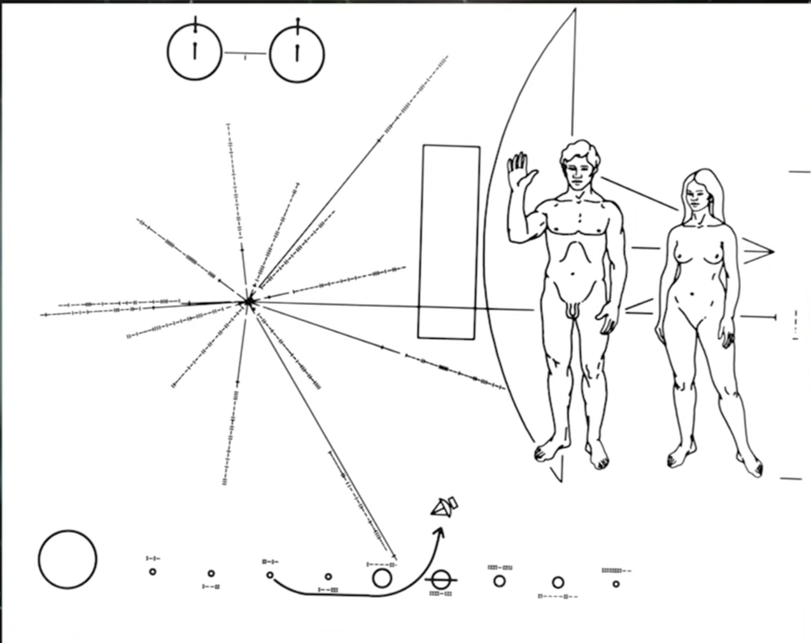

The Inexplicable Universe
by

You never know what's gonna cause the next great discovery to be made. Is it a Eureka moment in the middle of the night? is it some small small ink consistency in a measurement that you made? Isaac Asimov famously noted that the greatest discoveries in the history of the world weren't somebody burning the midnight oil saying “Eureka!”. It was somebody looking at some data and saying “that's odd?”. So consider that in the late 1800s classical physics was riding high. What does classical physics? It's Newton it's it's its electricity its magnetism it's all of these sort of basic laws of physics that were established basically between the 1600s and the 1800s. Definitely before the Quantum and before Relativity and all these exotic theories of the universe that defy every bit of common sense you could possibly bring to bear. So there's some well-known scientists at the end of the 1800s and they were sure that there were no more major discoveries to take place in the field and that physics would soon end. They were just a few messy clouds on the horizon that some better research would resolve which leads to they don't these differ from each other do the experiment again a few times and that'll all come out just fine.
Coming out of the 1800s however, those small clouds turned to be more like sort of chinks in the armor of classical physics. Which eventually opened a door into a century of mind-blowing modern physics that transformed the world. Not only the world in physics but geopolitics as well. It's the simple introduction of E = mc2 as the foundation of all our nuclear arsenals how they generate energy. So small things that don't quite work. Some of them get resolved with better data others don't. They lead to deep and new understandings of the universe and so in that spirit I bring to you a story, something we call the “Pioneer Anomaly”. There are two spacecraft pioneer 10 and 11 they were launched in 1972 in 1973 and they were destined to take a tour of the planets and escape the solar system altogether. And the way you do that is because we don't have our rockets aren't big enough to give it that much energy. So they launch and they swing behind they come in behind a planet and they fall towards it and the orbit of the planet catches on to the to the space probe and then you do a sort of a gravitational slingshot flinging it forward with extra energy. When you do that for a couple of planets you can have enough energy to have those space probe probes escape the solar system altogether. They were the first-ever pieces of hardware to achieve this feat. Because of this fact we had a fixed on their sides a famous plaque of Pictograms.
 It showed among other things an unclothed male and female human form and the male you may remember this from from the day and the male had an arm raised presumably a sign of peace that assumes that this is a sign of peace to aliens of course. But on this plaque there's a map that showed where the craft came from which is essentially the return address of the solar system in the galaxy and not only that it showed some other basic scientific insights. That we've gleaned as a species. So all of this is in case the aliens from another star system found the craft, it would allow them to learn basic facts about our species. There was a comic shortly after the spacecraft did their thing and they were well publicized there was a comic and it showed aliens who had captured come upon the pioneer craft and they're looking at this picture that we sent on the side of the craft and these aliens are dressed in tuxedos by the way and one alien turns to the other and says “they're just like us except they don't wear clothes” stupid comic but I'd never forget it. But anyway, these plaques represented the first-ever attempt to communicate with another species using pictograms and hardware that they might come upon. Now here they are on their way out of the solar system. We expect them to slow down we know they're going to escape but whatever speed they have we expect them to slow down as they climb out of the Sun's gravitational embrace. Now since they have enough energy to escape entirely they'll slow down but never slow down to zero okay that's fine. Here's the problem, the actual deceleration we measure is greater for each craft then what we calculate it should be after accounting for all the possible forces that could slow down the craft. That is the Pioneer anomaly. The effect is small but it's persistent and every attempt to understand its cause has failed. The effect became measurable about eight years into the journey but it was not studied in detail until about 1994 and we haven't communicated with the pioneer craft since 2003 they're too far away now for signals to be exchanged. But we have data over a 23-year period from nineteen from 1980 right on up through night through 2003 and that baseline of data continues to be studied.In our future we will collide with Andromeda after our son dies after the Sun around which we orbit expands to become a red giant and engulfs the orbit of the earth rendering us a charred ember soon to become vaporized. So we need to find a way to move to another planet or another star system to watch this happen. But then when we watch it happen if a star comes too close you can have a flyby looting of the planets that belong to one star gets stolen by another because stars will be flying back and forth. So it'll be an exciting time for Earth when that happens or it'll be a sight an exciting time for any civilizations alive to watch it. What we don't know is whether earth will survive that will we be among those flung into intergalactic space? Will we fall towards the SuperDuper massive black hole that now occupies its Center? Or we will we find a new home around a new star that is perhaps just born giving us a new lease on life for the apocalyptic civilization that ours.
Fin
Neil expands more on above explanation in this book


THANK YOU FOR YOUR TIME!